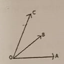
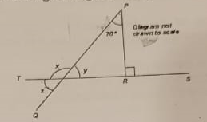
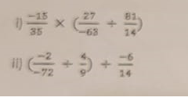
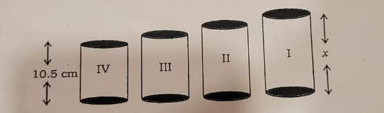
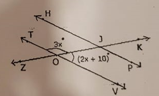

Question Paper
Delhi Public School
Gurugram I Sector 67A
HALF YEARLY ASSESSMENT
SESSION: 2024-25
NAME:
CLASS: VII
ROLL NO:
DATE: 17th September, 2024
SUBJECT: Mathematics
M.M: 80
DURATION: 3 hrs
INSTRUCTIONS:
- Read the question paper carefully.
- All the questions are mandatory.
- This question paper consists of 33 questions and 5 printed pages.
- Number your answers correctly according to the questions.
- Do not write any information on the question paper.
Section A (10 Marks)
Q.1
The value of 1.3 × 3.1 is
- a. 4.03
- b. 0.403
- c. 4.0339
- d. 0.0403
Q.2
The number of angles formed, when two lines intersect, is
- a. 5
- b. 4
- c. 2
- d. 6
Q.3
What is the product of the largest and the smallest fraction from the following list?
9/11 3/11 7/11 5/11 10/11 6/11 Options:
- a. 18/121
- b. 30/121
- c. 35/121
- d. 90/121
Q.4
The solution of the equation \(3x+4=25\) is
- a. 7
- b. 8
- c. 9
- d. 6
Q.5
Find the fraction of 3 km to 300 m. Options:
- a. 1/100
- b. 10/1
- c. 1/10
- d. 100/1
Q.6
\(-5+9+(-5)+(-10)+(7)\) is equal to
- a. 13
- b. -13
- c. 10
- d. -10
Q.7
In the adjoining figure, if AB = PQ and BC = CQ, then find the measure of angle CPQ.

- a. 30°
- b. 90°
- c. 80°
- d. 60°
Q.8
Mean of 11, 10, 12, 12, 9, 10, 14, 12, 9 is
- a. 20
- b. 10
- c. 14
- d. 11
Q.9
An expression remains the same, when the expressions on the left and on the right are interchanged.
- a. Expression
- b. Equation
- c. Variable
- d. Constant
Q.10
Number of acute angles in the following figure is
- a. 3
- b. 1
- c. 4
- d. 2

Section B (12 Marks)
Q.11
Find the value of x in the adjacent figure and state the property that is used to find the value.
- a. 30°
- b. 60°
- c. 45°
- d. 50°

Q.12
If 28 trousers of equal size can be made from 63 m of cloth, what length of cloth is required for one trouser?
Q.13
Calculate the mean of the first five prime numbers.
Q.14
If 2x-1=x+2, then what is the value of x?
Q.15
Calculate median and mode for the following data: 38, 45, 46, 12, 34, 87, 78, 12, 65, 35, 19, 34, 55, 67, 81, 12, 56, 98, 1, 49, 23, 50
Q.16
Raju owns a plot which is 1 acre in size. If the value of land in his area is ₹48,000 per acre, what is the value of his plot?
Section C (30 Marks)
Q.17
In a family, the consumption of wheat is 4 times that of rice. The total consumption of the two cereals is 80 kg. Find the quantities of rice and wheat consumed in the family.
Q.18
The given data is arranged in ascending order. The sum of mode and median of the given data is 15. Find the value of y. \(y-1, y-1, y+1, y+4, 2y+1, 3y, 4y\)
Q.19
In the given adjacent figure, △QPR is a right-angled triangle with angle QPR = 70°.
- i) Find the value of y
- ii) Find the value of x
- iii) Find the value of z

Q.20
A square and an equilateral triangle have a side in common. If the side of the triangle is 4/3 cm long, find the perimeter of the adjacent figure.

Q.21
In the given adjacent figure, EV, FK, and GS are the medians of the triangle EFG. Find the value of:
- i) FS
- ii) KG
- iii) FV

Q.22
A shopkeeper earns a profit of ₹1 by selling one pen and incurs a loss of 40 paise per pencil while selling pencils of her old stock. In a particular month, she incurs a loss of ₹5. In this period, she sold 45 pens. How many pencils did she sell in this period?
Q.23
A car covers a distance of 89.1 km in 2.2 hours. What is the average distance covered by it in 1 hour?
Q.24
"5 added to three-fifth of a number gives 14/3".
- i) Write the equation for the above statement.
- ii) Solve the equation and find the number.
Q.25
In a class test containing 15 questions, 4 marks are given for every correct answer and (-2) marks are given for every incorrect answer.
- i) Gurpreet attempts all questions but only 9 of her answers are correct. What is her total score?
- ii) One of her friends attempted all questions and got only 5 answers correct. What will be her score?
Q.26
If RO is perpendicular to PT in the adjacent figure, find the measure of angle 1 and angle 2.

Section D (28 Marks)
Q.27
Simplify and reduce to standard form: 
Q.28
The data given below shows the production of motor bikes in a factory for some months of two consecutive years.
| Months | 2023 | 2024 |
|---|---|---|
| February | 2700 | 2800 |
| May | 3200 | 4500 |
| August | 6000 | 4800 |
| October | 5000 | 4800 |
| December | 4200 | 5200 |
- i) Draw a double bar graph using appropriate scale to depict the above information.
- ii) In which year was the total output the maximum?
Q.29
The foot of a ladder is 6 m away from a wall, and its top reaches 8 m above the ground.
- i) Find the length of the ladder.
- ii) If the ladder is shifted in such a way that its foot is 8 m away from the wall, to what height does its top reach?
Q.30
- i) Raju's father's age is 5 years more than three times Raju's age. Find Raju's age, if his father is 44 years old.
- ii) Find a number, such that one-fourth of the number is 3 more than 7.
Q.31
There are four containers that are arranged in the ascending order of their heights. If the height of the smallest container given in the below figure is expressed as x = 10.5 cm, find the height of the largest container (x). 
Q.32
Find the value of x in the adjacent figure. 
Q.33
A tree is broken at a height of 5 m from the ground, and its top touches the ground at a distance of 12 m from the base of the tree. Find the original height of the tree.